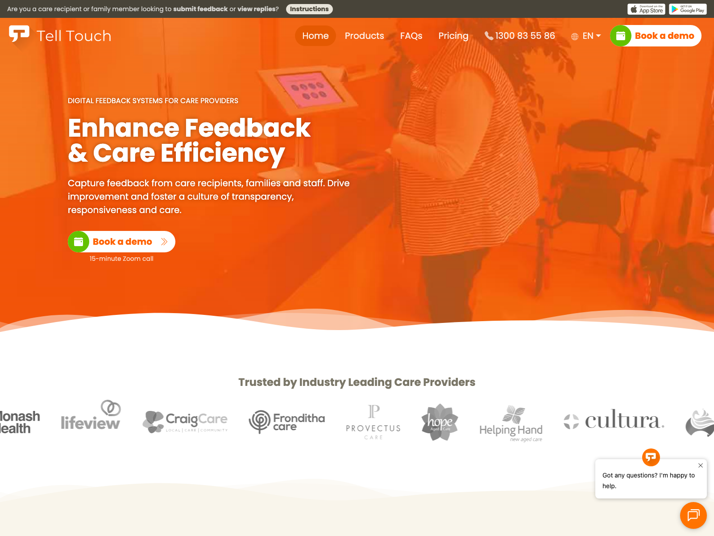

Aged care · SaaS · Lead Rails Developer
Tell Touch: aged-care feedback and compliance platform
A multi-tenant SaaS that aged-care, home-care and disability providers use to capture feedback, complaints and compliance audits. I upgraded it from Rails 6 to 8.1, added TOTP 2FA and AWS Cognito SSO, built a Grape/JWT API for the kiosk app, integrated six aged-care record systems, added OpenAI summaries and transcription, and built a separate Puppeteer PDF service.
Rails 8.1
PostgreSQL
Sidekiq
Grape API
Docker
Visit telltouch.com.au